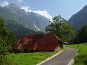
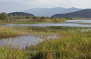
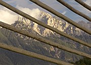
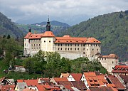

|  |
The Soča ValleyHidden away on the western edge of Slovenia is one of its most interesting regions, with something for everyone from bungee jumpers to students of military history. |
|  |
The Karst RegionRead about some of the weird and wonderful geological features to be found in Slovena's Southwest. |
|  |
The Julian AlpsExplore the Slovenian Alps from Bled, Bohinj, or Kranjska Gora. |
|  |
Smalltown SloveniaSlovenia has many charming small towns - here you can find descriptions of three of the best: Ptuj, Kamnik, and Škofja Loka. |